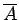
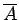

Inhalt Index DeskTop Bronstein

 Funktionalanalysis Metrische Räume Begriff des metrischen Raumes Abgeschlossene Mengen und Abschließung
Funktionalanalysis Metrische Räume Begriff des metrischen Raumes Abgeschlossene Mengen und Abschließung


Jede Teilmenge A eines metrischen Raumes  liegt in der abgeschlossenen Menge
liegt in der abgeschlossenen Menge  . Es existiert immer eine kleinste abgeschlossene Menge, die A enthält, nämlich der Durchschnitt aller abgeschlossenen Mengen aus
. Es existiert immer eine kleinste abgeschlossene Menge, die A enthält, nämlich der Durchschnitt aller abgeschlossenen Mengen aus  , die A enthalten. Diese Menge heißt abgeschlossene Hülle oder Abschließung der Menge A und wird gewöhnlich mit  bezeichnet. ist mit der Menge aller Berührungspunkte von A identisch; man erhält aus der Menge A durch Hinzufügen aller ihrer Häufungspunkte. Abgeschlossene Mengen sind gerade solche Mengen
, die A enthalten. Diese Menge heißt abgeschlossene Hülle oder Abschließung der Menge A und wird gewöhnlich mit  bezeichnet. ist mit der Menge aller Berührungspunkte von A identisch; man erhält aus der Menge A durch Hinzufügen aller ihrer Häufungspunkte. Abgeschlossene Mengen sind gerade solche Mengen  , für die gilt. Demzufolge erlauben sie eine Charakterisierung durch Folgen in folgender Weise: A ist abgeschlossen genau dann, wenn für eine beliebige Folge
, für die gilt. Demzufolge erlauben sie eine Charakterisierung durch Folgen in folgender Weise: A ist abgeschlossen genau dann, wenn für eine beliebige Folge  von Elementen aus A, die im Raum
von Elementen aus A, die im Raum  zu einem Element konvergiert, der Grenzwert x0 zu A gehört.
zu einem Element konvergiert, der Grenzwert x0 zu A gehört.